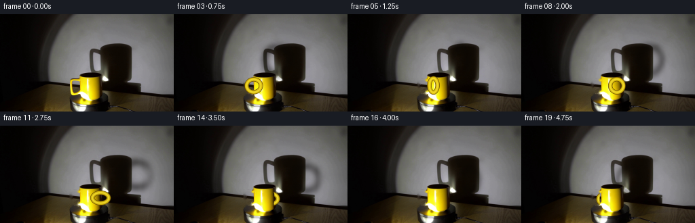
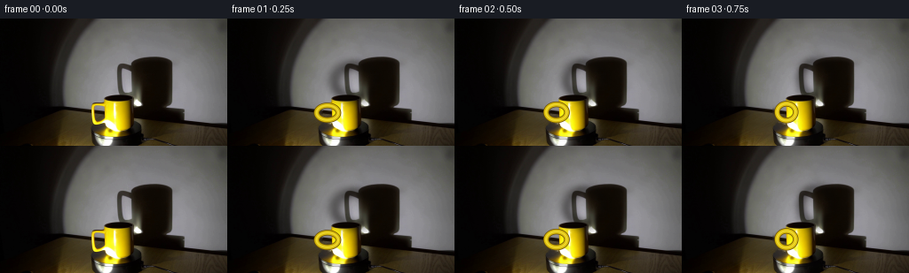
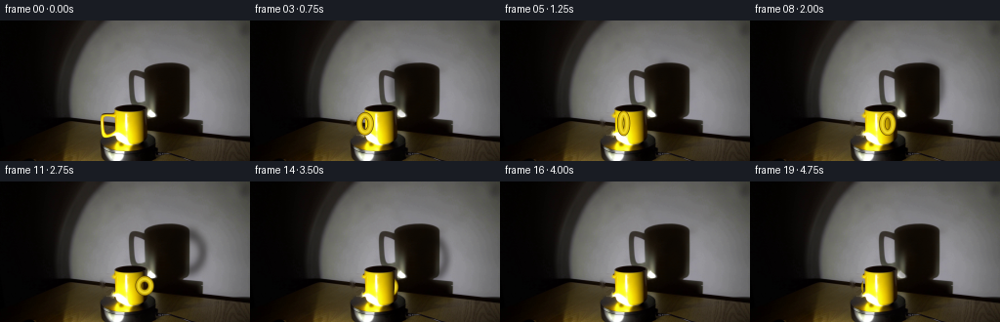
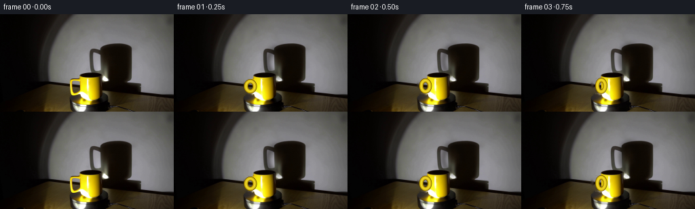

CODING AGENTS AS PIXEL WORLD MODELS
traex/GPT-5.6-Sol · 0078
点击播放 · 原生 RGB 像素
逐轮保存的候选
回放视频、检查图与代码变化。
每份候选均可单独播放。实际图片检查记录在下方工具轨迹中。
候选 01播放与检查图
点击播放 · 原生 RGB 像素


展开代码变化
--- 上一保存版本
+++ 本次保存版本
@@ -0,0 +1,168 @@
+from pathlib import Path
+import math
+import cv2
+import numpy as np
+from PIL import Image
+import artifact_io
+
+CASE_DIR = Path(__file__).resolve().parent
+
+
+def soft_ring(h, w, cx, cy, rx, ry, thickness=0.32, blur=2.2):
+ yy, xx = np.mgrid[:h, :w].astype(np.float32)
+ q = np.sqrt(((xx-cx)/max(rx, 1))**2 + ((yy-cy)/max(ry, 1))**2)
+ # An uneven penumbra is more natural than an exactly uniform dark outline.
+ ring = np.exp(-0.5*((q-1.0)/thickness)**2)
+ ring *= 0.94 + 0.06*np.sin(xx*.31 + yy*.17)
+ if blur:
+ ring = cv2.GaussianBlur(ring, (0, 0), blur)
+ return np.clip(ring, 0, 1)
+
+
+def supersampled_handle(theta, h=144, w=256, scale=4):
+ """Return antialiased RGB/alpha layers for the revolving ceramic handle."""
+ c, s = math.cos(theta), math.sin(theta)
+ front = max(0.0, -s) # the near half of the turn
+ depth_scale = 0.82 + .18*front
+ cx = 130.0 + 18.0*c
+ cy = 107.0 + 1.7*s
+ rx = (4.0 + 10.5*abs(c))*depth_scale
+ ry = (9.0 + 1.5*front)*depth_scale
+
+ H, W = h*scale, w*scale
+ masks = []
+ # Several concentric strokes give the ceramic loop a shaded, round section.
+ for width in (6.0, 4.4, 1.55):
+ m = np.zeros((H, W), np.uint8)
+ cv2.ellipse(m, (round(cx*scale), round(cy*scale)),
+ (max(1, round(rx*scale)), max(1, round(ry*scale))),
+ 0, 0, 360, 255, max(1, round(width*scale)), cv2.LINE_AA)
+ masks.append(cv2.resize(m, (w, h), interpolation=cv2.INTER_AREA).astype(np.float32)/255.)
+
+ # Outer ochre edge, yellow ceramic, and a slim warm glint on the lit edge.
+ layers = [
+ (masks[0], np.array([104, 76, 4], np.float32)),
+ (masks[1], np.array([205 + 15*front, 176 + 13*front, 13], np.float32)),
+ (masks[2], np.array([244, 222, 48], np.float32)),
+ ]
+ return layers, c, s, front
+
+
+def build_frames(first):
+ h, w = first.shape[:2]
+ base = first.copy()
+ r, g, b = [base[..., k].astype(np.int16) for k in range(3)]
+
+ # Isolate only the original left-side handle. The body starts at x=116.
+ old_handle = ((r > 76) & (g > 55) & (r-b > 34) & (g-b > 23))
+ region = np.zeros((h, w), bool)
+ region[90:123, 97:116] = True
+ old_handle &= region
+ old_handle = cv2.dilate(old_handle.astype(np.uint8), np.ones((3, 3), np.uint8), iterations=1)
+ # Do not disturb the bottom of the cup where it widens to the left.
+ old_handle[121:] = 0
+ clean = cv2.inpaint(base, old_handle*255, 3, cv2.INPAINT_TELEA)
+
+ # Original cup body is retained pixel-for-pixel for photographic texture.
+ # This silhouette determines whether the handle is in front of or behind it.
+ body = np.zeros((h, w), np.uint8)
+ body_poly = np.array([[116,92],[138,92],[145,95],[147,101],[146,119],
+ [141,126],[138,131],[130,134],[116,132],[108,128],
+ [113,122],[116,116]], np.int32)
+ cv2.fillPoly(body, [body_poly], 255, cv2.LINE_AA)
+ body_alpha = body.astype(np.float32)/255.
+
+ # Preserve every source pixel except the original handle pixels.
+ body_source = base.astype(np.float32)
+ result = []
+ yy, xx = np.mgrid[:h, :w].astype(np.float32)
+
+ # Platform top: an ellipse mostly below the lower image boundary.
+ px, py, squash = 128.0, 149.0, 3.3
+ dx, dy = xx-px, (yy-py)*squash
+ radius = np.sqrt(dx*dx + dy*dy)
+ platter = (radius < 105) & (yy > 118) & ((r+g+b) < 260)
+ phi = np.arctan2(dy, dx)
+
+ for i in range(20):
+ if i == 0:
+ result.append(first.copy())
+ continue
+ # 300 degrees in the recorded 4.75 seconds: steady real-time rotation.
+ theta = math.pi + math.radians(300.0) * (i/19.0)
+ c, s = math.cos(theta), math.sin(theta)
+ frame = clean.astype(np.float32)
+
+ # Slow moving, low-contrast brushed highlights make the black turntable's
+ # clockwise motion visible without inventing conspicuous painted marks.
+ brushed = (0.5 + 0.5*np.cos(3.0*(phi-theta) + radius*.052))
+ brushed += .38*(0.5 + 0.5*np.cos(7.0*(phi-theta) - radius*.025))
+ edge_fade = np.clip((105-radius)/22, 0, 1) * np.clip((yy-118)/17, 0, 1)
+ amt = (brushed-.63) * 4.8 * edge_fade
+ for k, tint in enumerate((.92, .95, 1.0)):
+ ch = frame[..., k]
+ ch[platter] = np.clip(ch[platter] + amt[platter]*tint, 0, 255)
+
+ # Large magnified handle shadow on the wall. Its soft ring travels around
+ # the stable, already-photographic shadow of the cup body.
+ shadow_cx = 172.0 + 30.0*c
+ shadow_cy = 73.0 + 7.5*s
+ shadow_rx = 7.0 + 16.0*abs(c)
+ shadow_ry = 18.0 + 2.0*max(0.0, -s)
+ sh = soft_ring(h, w, shadow_cx, shadow_cy, shadow_rx, shadow_ry,
+ thickness=.25, blur=2.0)
+ # Wall-only gating keeps the cast shadow out of the physical foreground.
+ wall_gate = (yy < 115).astype(np.float32)
+ wall_gate *= np.clip((yy-28)/18, 0, 1)
+ wall_gate *= np.clip((230-xx)/20, 0, 1)
+ strength = .35 + .16*abs(c)
+ alpha = np.clip(sh * wall_gate * strength, 0, .52)
+ shadow_color = np.array([8, 6, 3], np.float32)
+ frame = frame*(1-alpha[...,None]) + shadow_color*alpha[...,None]
+
+ # Paint revolving handle. On the far half only portions outside the cup
+ # silhouette survive; on the near half it naturally crosses the body.
+ layers, c, s, front = supersampled_handle(theta, h, w)
+ far = s > 0.0
+ for j, (a, color) in enumerate(layers):
+ if far:
+ a = a * (1.0-body_alpha)
+ else:
+ # Near-facing handle is foreshortened over the body, but its
+ # innermost highlight is deliberately restrained.
+ if j == 2:
+ a *= .82
+ frame = frame*(1-a[...,None]) + color*a[...,None]
+
+ # Restore the source cup body over a far-side handle. On the near side,
+ # retain the original body and add a subtle rotating specular response.
+ if far:
+ a = body_alpha[...,None]
+ frame = frame*(1-a) + body_source*a
+ else:
+ spec_x = 129.0 + 5.3*c
+ spec = np.exp(-0.5*((xx-spec_x)/2.3)**2)
+ spec *= np.exp(-0.5*((yy-108)/16.0)**2) * body_alpha
+ spec *= .055*(.35 + .65*front)
+ frame = frame*(1-spec[...,None]) + np.array([255,235,72],np.float32)*spec[...,None]
+
+ # Contact shadow always anchors the mug to the revolving platform.
+ contact = np.exp(-0.5*(((xx-128)/18)**2 + ((yy-133.0)/2.25)**2))
+ contact *= (yy > 129)
+ # Avoid darkening yellow pixels of the body itself.
+ contact *= (1-body_alpha) * .22
+ frame = frame*(1-contact[...,None]) + np.array([3,2,1],np.float32)*contact[...,None]
+
+ result.append(np.clip(np.rint(frame), 0, 255).astype(np.uint8))
+ return np.stack(result)
+
+
+def main():
+ first = np.array(Image.open(CASE_DIR / 'first_frame.png').convert('RGB'), dtype=np.uint8)
+ frames = build_frames(first)
+ assert np.array_equal(frames[0], first)
+ artifact_io.save(frames, CASE_DIR)
+
+
+if __name__ == '__main__':
+ main()
候选 02播放与检查图
点击播放 · 原生 RGB 像素


展开代码变化
--- 上一保存版本
+++ 本次保存版本
@@ -26,8 +26,8 @@
depth_scale = 0.82 + .18*front
cx = 130.0 + 18.0*c
cy = 107.0 + 1.7*s
- rx = (4.0 + 10.5*abs(c))*depth_scale
- ry = (9.0 + 1.5*front)*depth_scale
+ rx = (2.5 + 5.2*abs(c))*depth_scale
+ ry = (8.2 + 1.5*front)*depth_scale
H, W = h*scale, w*scale
masks = []
@@ -105,9 +105,9 @@
# Large magnified handle shadow on the wall. Its soft ring travels around
# the stable, already-photographic shadow of the cup body.
- shadow_cx = 172.0 + 30.0*c
+ shadow_cx = 172.0 + 20.0*c
shadow_cy = 73.0 + 7.5*s
- shadow_rx = 7.0 + 16.0*abs(c)
+ shadow_rx = 6.0 + 9.0*abs(c)
shadow_ry = 18.0 + 2.0*max(0.0, -s)
sh = soft_ring(h, w, shadow_cx, shadow_cy, shadow_rx, shadow_ry,
thickness=.25, blur=2.0)
可观测工具轨迹
实际执行的命令与返回图片。
命令 1exit 0
/bin/bash -lc "cat GENERATION_RULES.md && printf '\\n--- PROMPT ---\\n' && cat prompt.txt"
命令 2exit 127
/bin/bash -lc "find . -maxdepth 2 -type f -printf '%p %s bytes\\n' | sort && file first_frame.png"
命令 3exit 0
/bin/bash -lc "python3 - <<'PY'
from PIL import Image
import numpy as np
im=np.array(Image.open('first_frame.png').convert('RGB'))
print(im.shape, im.min((0,1)), im.max((0,1)), im.mean((0,1)), im.std((0,1)))
# yellow masks variants
r,g,b=im.transpose(2,0,1)
for name,m in {
'yellow1':(r>120)&(g>80)&(r>1.2*b)&(g>1.1*b),
'yellow2':(r>150)&(g>100)&(b<100)&(r>g*.9),
'black':(r<50)&(g<50)&(b<50),
'dark':(r+g+b<180),
'bright':(r+g+b>650),
}.items():
ys,xs=np.where(m)
print(name,len(xs),'bbox', (xs.min(),ys.min(),xs.max(),ys.max()) if len(xs) else None,'centroid', (xs.mean(),ys.mean()) if len(xs) else None)
# 12x8 blocks average RGB
for yy in range(0,144,12):
print('ROW',yy, ['%02x%02x%02x'%tuple(im[yy:yy+12,xx:xx+16].mean((0,1)).astype(int)) for xx in range(0,256,16)])
PY"命令 4exit 0
/bin/bash -lc "python3 - <<'PY'
from PIL import Image
import numpy as np
from scipy.ndimage import label
A=np.array(Image.open('first_frame.png').convert('RGB'))
r,g,b=np.moveaxis(A,2,0)
# classify chromatic yellow/brown relevant
for expr in range(4):
if expr==0:m=(r>90)&(r>g*.85)&(g>b*1.35)&(r>b*1.5)
if expr==1:m=(r>100)&(g>70)&((r.astype(int)+g.astype(int))>2.4*b.astype(int))
if expr==2:m=(r>130)&(g>90)&(b<100)
if expr==3:m=(r>80)&(g>60)&((r.astype(int)-b.astype(int))>50)&((g.astype(int)-b.astype(int))>35)
L,n=label(m)
print('\\nEXPR',expr, 'total',m.sum())
for i in range(1,n+1):
ys,xs=np.where(L==i)
if len(xs)>5: print(len(xs),(xs.min(),ys.min(),xs.max(),ys.max()),tuple(np.round(A[L==i].mean(0),1)))
# ascii ROI, hue chars: yellow Y bright y, dark k, gray .; 2px cells
for y in range(80,144,2):
s=''
for x in range(70,191,2):
z=A[y:y+2,x:x+2].mean((0,1)); R,G,B=z
if R>140 and G>100 and B<100:c='Y'
elif R>90 and G>70 and R>1.3*B and G>1.3*B:c='y'
elif R<30 and G<30 and B<30:c='#'
elif sum(z)<150:c='k'
elif sum(z)<260:c='d'
elif sum(z)<380:c='.'
else:c='o'
s+=c
print(f'{y:03}',s)
PY"命令 5exit 0
/bin/bash -lc "python3 - <<'PY'
from PIL import Image
import numpy as np
A=np.array(Image.open('first_frame.png').convert('RGB'))
for y in [35,45,55,65,75,85,90,95,100,105,110,115,120,125,130,135,140,143]:
lum=A[y].mean(1); chrom=A[y,:,0].astype(int)-A[y,:,2]
# runs based lum bins
bins=np.digitize(lum,[15,35,65,100,140,180])
runs=[]; st=0
for x in range(1,256):
if bins[x]"'!=bins[st]:
if x-st>=3:runs.append((st,x-1,int(bins[st]),round(lum[st:x].mean())))
st=x
if 256-st>=3:runs.append((st,255,int(bins[st]),round(lum[st:].mean())))
print(y,runs)
# selected pixel columns lum y runs
for x in [50,80,100,110,120,130,140,150,160,170,180,190,200,220]:
print('"'X',x, ['%3d'%A[y,x].mean() for y in range(0,144,8)])
PY"命令 6exit 0
/bin/bash -lc "python3 - <<'PY'
from PIL import Image
import numpy as np
A=np.array(Image.open('first_frame.png').convert('RGB'));r,g,b=np.moveaxis(A,2,0)
m=(r>80)&(g>60)&(r.astype(int)>b.astype(int)+35)&(g.astype(int)>b.astype(int)+25)
for y in range(80,144):
xs=np.where(m[y])[0]; xs=xs[(xs>85)&(xs<160)]
if len(xs):
# runs
runs=[]; st=xs[0];p=xs[0]
for x in xs[1:]:
if x>p+1:runs.append((st,p));st=x
p=x
runs.append((st,p))
print(y,runs)
PY"命令 7exit 0
/bin/bash -lc "sed -n '1,240p' artifact_io.py && python3 - <<'PY'
try:
import cv2; print('cv2',cv2.__version__)
except Exception as e: print(e)
try:
import scipy; print('scipy',scipy.__version__)
except Exception as e: print(e)
PY"命令 8exit 0
/bin/bash -lc "cat > generate.py <<'PY'
from pathlib import Path
import math
import cv2
import numpy as np
from PIL import Image
import artifact_io
CASE_DIR = Path(__file__).resolve().parent
def soft_ring(h, w, cx, cy, rx, ry, thickness=0.32, blur=2.2):
yy, xx = np.mgrid[:h, :w].astype(np.float32)
q = np.sqrt(((xx-cx)/max(rx, 1))**2 + ((yy-cy)/max(ry, 1))**2)
# An uneven penumbra is more natural than an exactly uniform dark outline.
ring = np.exp(-0.5*((q-1.0)/thickness)**2)
ring *= 0.94 + 0.06*np.sin(xx*.31 + yy*.17)
if blur:
ring = cv2.GaussianBlur(ring, (0, 0), blur)
return np.clip(ring, 0, 1)
def supersampled_handle(theta, h=144, w=256, scale=4):
\"\"\"Return antialiased RGB/alpha layers for the revolving ceramic handle.\"\"\"
c, s = math.cos(theta), math.sin(theta)
front = max(0.0, -s) # the near half of the turn
depth_scale = 0.82 + .18*front
cx = 130.0 + 18.0*c
cy = 107.0 + 1.7*s
rx = (4.0 + 10.5*abs(c))*depth_scale
ry = (9.0 + 1.5*front)*depth_scale
H, W = h*scale, w*scale
masks = []
# Several concentric strokes give the ceramic loop a shaded, round section.
for width in (6.0, 4.4, 1.55):
m = np.zeros((H, W), np.uint8)
cv2.ellipse(m, (round(cx*scale), round(cy*scale)),
(max(1, round(rx*scale)), max(1, round(ry*scale))),
0, 0, 360, 255, max(1, round(width*scale)), cv2.LINE_AA)
masks.append(cv2.resize(m, (w, h), interpolation=cv2.INTER_AREA).astype(np.float32)/255.)
# Outer ochre edge, yellow ceramic, and a slim warm glint on the lit edge.
layers = [
(masks[0], np.array([104, 76, 4], np.float32)),
(masks[1], np.array([205 + 15*front, 176 + 13*front, 13], np.float32)),
(masks[2], np.array([244, 222, 48], np.float32)),
]
return layers, c, s, front
def build_frames(first):
h, w = first.shape[:2]
base = first.copy()
r, g, b = [base[..., k].astype(np.int16) for k in range(3)]
# Isolate only the original left-side handle. The body starts at x=116.
old_handle = ((r > 76) & (g > 55) & (r-b > 34) & (g-b > 23))
region = np.zeros((h, w), bool)
region[90:123, 97:116] = True
old_handle &= region
old_handle = cv2.dilate(old_handle.astype(np.uint8), np.ones((3, 3), np.uint8), iterations=1)
# Do not disturb the bottom of the cup where it widens to the left.
old_handle[121:] = 0
clean = cv2.inpaint(base, old_handle*255, 3, cv2.INPAINT_TELEA)
# Original cup body is retained pixel-for-pixel for photographic texture.
# This silhouette determines whether the handle is in front of or behind it.
body = np.zeros((h, w), np.uint8)
body_poly = np.array([[116,92],[138,92],[145,95],[147,101],[146,119],
[141,126],[138,131],[130,134],[116,132],[108,128],
[113,122],[116,116]], np.int32)
cv2.fillPoly(body, [body_poly], 255, cv2.LINE_AA)
body_alpha = body.astype(np.float32)/255.
# Preserve every source pixel except the original handle pixels.
body_source = base.astype(np.float32)
result = []
yy, xx = np.mgrid[:h, :w].astype(np.float32)
# Platform top: an ellipse mostly below the lower image boundary.
px, py, squash = 128.0, 149.0, 3.3
dx, dy = xx-px, (yy-py)*squash
radius = np.sqrt(dx*dx + dy*dy)
platter = (radius < 105) & (yy > 118) & ((r+g+b) < 260)
phi = np.arctan2(dy, dx)
for i in range(20):
if i == 0:
result.append(first.copy())
continue
# 300 degrees in the recorded 4.75 seconds: steady real-time rotation.
theta = math.pi + math.radians(300.0) * (i/19.0)
c, s = math.cos(theta), math.sin(theta)
frame = clean.astype(np.float32)
# Slow moving, low-contrast brushed highlights make the black turntable's
# clockwise motion visible without inventing conspicuous painted marks.
brushed = (0.5 + 0.5*np.cos(3.0*(phi-theta) + radius*.052))
brushed += .38*(0.5 + 0.5*np.cos(7.0*(phi-theta) - radius*.025))
edge_fade = np.clip((105-radius)/22, 0, 1) * np.clip((yy-118)/17, 0, 1)
amt = (brushed-.63) * 4.8 * edge_fade
for k, tint in enumerate((.92, .95, 1.0)):
ch = frame[..., k]
ch[platter] = np.clip(ch[platter] + amt[platter]*tint, 0, 255)
# Large magnified handle shadow on the wall. Its soft ring travels around
# the stable, already-photographic shadow of the cup body.
shadow_cx = 172.0 + 30.0*c
shadow_cy = 73.0 + 7.5*s
shadow_rx = 7.0 + 16.0*abs(c)
shadow_ry = 18.0 + 2.0*max(0.0, -s)
sh = soft_ring(h, w, shadow_cx, shadow_cy, shadow_rx, shadow_ry,
thickness=.25, blur=2.0)
# Wall-only gating keeps the cast shadow out of the physical foreground.
wall_gate = (yy < 115).astype(np.float32)
wall_gate *= np.clip((yy-28)/18, 0, 1)
wall_gate *= np.clip((230-xx)/20, 0, 1)
strength = .35 + .16*abs(c)
alpha = np.clip(sh * wall_gate * strength, 0, .52)
shadow_color = np.array([8, 6, 3], np.float32)
frame = frame*(1-alpha[...,None]) + shadow_color*alpha[...,None]
# Paint revolving handle. On the far half only portions outside the cup
# silhouette survive; on the near half it naturally crosses the body.
layers, c, s, front = supersampled_handle(theta, h, w)
far = s > 0.0
for j, (a, color) in enumerate(layers):
if far:
a = a * (1.0-body_alpha)
else:
# Near-facing handle is foreshortened over the body, but its
# innermost highlight is deliberately restrained.
if j == 2:
a *= .82
frame = frame*(1-a[...,None]) + color*a[...,None]
# Restore the source cup body over a far-side handle. On the near side,
# retain the original body and add a subtle rotating specular response.
if far:
a = body_alpha[...,None]
frame = frame*(1-a) + body_source*a
else:
spec_x = 129.0 + 5.3*c
spec = np.exp(-0.5*((xx-spec_x)/2.3)**2)
spec *= np.exp(-0.5*((yy-108)/16.0)**2) * body_alpha
spec *= .055*(.35 + .65*front)
frame = frame*(1-spec[...,None]) + np.array([255,235,72],np.float32)*spec[...,None]
# Contact shadow always anchors the mug to the revolving platform.
contact = np.exp(-0.5*(((xx-128)/18)**2 + ((yy-133.0)/2.25)**2))
contact *= (yy > 129)
# Avoid darkening yellow pixels of the body itself.
contact *= (1-body_alpha) * .22
frame = frame*(1-contact[...,None]) + np.array([3,2,1],np.float32)*contact[...,None]
result.append(np.clip(np.rint(frame), 0, 255).astype(np.uint8))
return np.stack(result)
def main():
first = np.array(Image.open(CASE_DIR / 'first_frame.png').convert('RGB'), dtype=np.uint8)
frames = build_frames(first)
assert np.array_equal(frames[0], first)
artifact_io.save(frames, CASE_DIR)
if __name__ == '__main__':
main()
PY
python3 generate.py
python3 - <<'PY'
import numpy as np
from PIL import Image
z=np.load('pixels.npz')['pixels']
print('pixels',z.shape,z.dtype)
a=np.array(Image.open('first_frame.png').convert('RGB'))
b=np.array(Image.open('frames/00.png'))
print('first exact',np.array_equal(a,b))
for i in range(20):
x=np.array(Image.open(f'frames/{i:02d}.png'))
d=np.abs(x.astype(int)-a.astype(int))
print(i, np.count_nonzero(d.max(2)), round(d.mean(),2), d.max(), tuple(np.round(x.mean((0,1)),2)))
PY"命令 9exit 0
/bin/bash -lc "python3 - <<'PY'
import cv2,numpy as np
from PIL import Image
A=np.array(Image.open('frames/00.png')); B=np.array(Image.open('frames/01.png'))
d=np.max(abs(B.astype(int)-A.astype(int)),2)
for th in [0,2,5,10,20,40,80,150]:
m=(d>th).astype('uint8'); n,L,st,c=cv2.connectedComponentsWithStats(m)
comps=sorted([tuple(x) for x in st[1:] if x[4]>4], key=lambda x:-x[4])[:10]
print(th,m.sum(),comps)
# per regions
for name,(y1,y2,x1,x2) in {'wall':(0,118,0,256),'shadow':(25,118,120,230),'mug':(85,136,90,155),'platform':(118,144,0,256)}.items():
q=d[y1:y2,x1:x2]; print(name, q.mean(),(q>5).sum(),q.max())
PY"命令 10exit 0
/bin/bash -lc "python3 - <<'PY'
from PIL import Image
import numpy as np
F=np.stack([np.array(Image.open(f'frames/{i:02}.png')) for i in range(20)]).astype(int)
for i in range(1,20):
d=np.abs(F[i]-F[i-1]); print(i,round(d.mean(),2),np.count_nonzero(d.max(2)>5),d.max())
PY"命令 11exit 0
/bin/bash -lc "python3 generate.py && python3 - <<'PY'
from PIL import Image
import numpy as np
F=np.stack([np.asarray(Image.open(f'frames/{i:02d}.png')) for i in range(20)])
A=np.asarray(Image.open('first_frame.png').convert('RGB'))
print('shape/dtype/exact:',F.shape,F.dtype,np.array_equal(F[0],A))
print('consecutive MAE:',[round(np.abs(F[i].astype(int)-F[i-1].astype(int)).mean(),2) for i in range(1,20)])
PY
ls -lh generate.py pixels.npz inspection.png index.html frames/00.png frames/19.png"保存候选 2 份；完成命令 11 次；可验证图片返回 0 张。原始 API 响应与完整日志保留在本地。